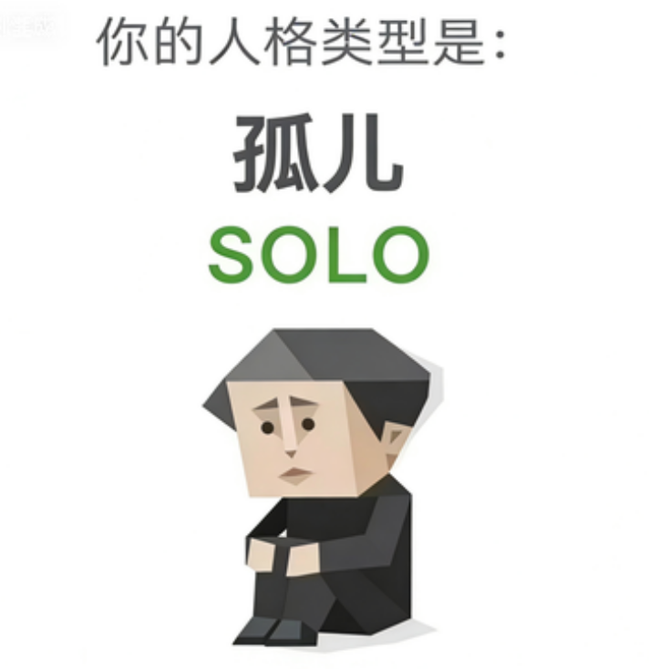

SOLO（孤儿）
我哭了，我怎么会是孤儿？
恭喜您，您测出了全中国最稀有的【SOLO - 孤儿】人格。别急着哭，国王的加冕仪式，通常都是一个人。孤儿的自我价值感偏低，因此有时主动疏远他人，孤儿们在自己的灵魂外围建起了一座名为"莫挨老子"的万里长城。每一块砖，都是过去的一道伤口。孤儿就像一只把所有软肋都藏起来，然后用最硬的刺对着世界的刺猬。那满身的尖刺不是攻击，那是一句句说不出口的"别过来，我怕你也受伤"和"求求你，别离开"。

我哭了，我怎么会是孤儿？
恭喜您，您测出了全中国最稀有的【SOLO - 孤儿】人格。别急着哭，国王的加冕仪式，通常都是一个人。孤儿的自我价值感偏低，因此有时主动疏远他人，孤儿们在自己的灵魂外围建起了一座名为"莫挨老子"的万里长城。每一块砖，都是过去的一道伤口。孤儿就像一只把所有软肋都藏起来，然后用最硬的刺对着世界的刺猬。那满身的尖刺不是攻击，那是一句句说不出口的"别过来，我怕你也受伤"和"求求你，别离开"。
